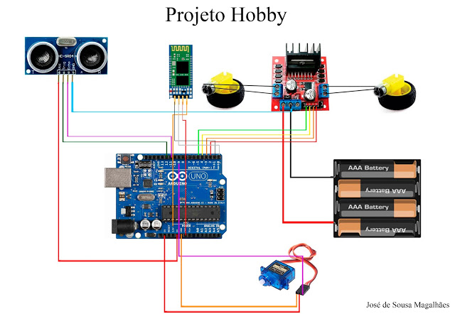

Projeto Hobby
Robô desenvolvido com arduino.
Conheça o projeto...
O projeto foi desenvolvido de maneira independente, sendo todos os custos arcados pelo desenvolvedor. Fora usado um kit robótico simples adquirido no Mercado Livre. Todos os materiais usados na montagem estão descritos mais abaixo.
Este equipamento pode ser controlado por qualquer smartphone com uso da tecnologia Bluetooth através do aplicativo Bluetooth RC Controler facilmente encontrado na PlayStore. Além de possui também, um modo autônomo guiando-se pelas barreiras através de sensor de Ultrassom.
A programação fora feita em C++, linguagem padrão aceita pelo Arduino. Todos os códigos de programação podem ser encontrados abaixo e também no repositório do GitHub.
Veja o video do projeto
Material usado
01 - Arduino Uno
01 - Cabo USB de alta qualidade
01 - Sensor de Ultrassom
01 - Driver L298N
10 - Jumper Macho-Femea
10 - Jumper Macho-Macho
01 - Chassi em acrílico
02 - Motores DC (3~6v)
02 - Rodas de Borracha
01 - Roda Boba (Universal)
02 - Discos de Encoder
01 - Suporte para 4 Pilhas
01 - Jogo de Parafusos
01 - Módulo Bluetooth RS2322/TTL
Diagrama esquemático
Código Fonte (Controlado por Bluetooth)
Código Fonte (Módulo Autônomo)
Desenvolvido por: José de Sousa Magalhães
Aluno do curso de Sistemas de Informação - UFPI